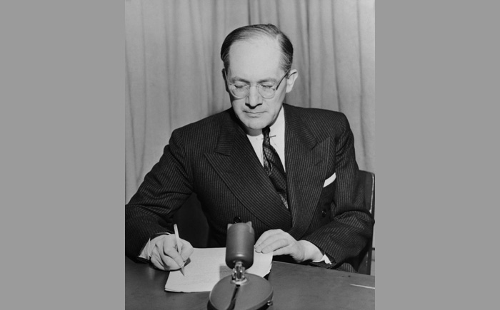
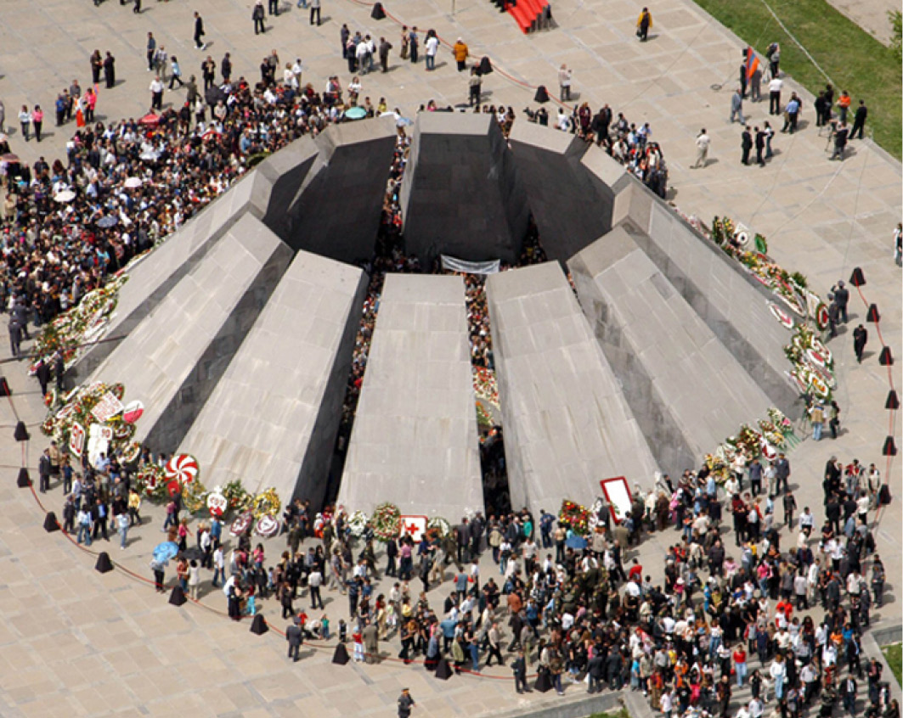

ג'נוסייד: התופעה וההגדרה
אני זוכר: זה קרה אתמול או לפני נצח נצחים. נער יהודי צעיר גילה את ממלכת הלילה. אני זוכר את הבלבול שלו, את ייסוריו. הכול קרה כל-כך מהר. הגטו. הגירוש. קרון הבהמות האטום. המזבח היוקד שעליו ההיסטוריה של עמנו והעתיד של המין האנושי עמדו להיות מוקרבים... ועכשיו הנער פונה אלי: "מה עשית עם העתיד שלי? מה עשית עם חיי?" ואני אומר לו שניסיתי. שניסיתי לשמור על הזיכרון חי, וניסיתי להיאבק במי ששכחו. מכיוון שאם אנו שוכחים, אנו אשמים, אנו שותפים לפשע.
(אלי ויזל, בטקס קבלת פרס נובל
לשלום באוסלו, 6891)
הג'נוסייד כתופעה היסטורית-אנושית
ג'נוסייד הוא תופעה אנושית שאנו מבקשים ללמוד עליה ולחשוב עליה, משום שהיא חלק — מודחק במידה זו או אחרת — ממציאות חיינו. העיסוק בנושא חושף שאלה מהותית הנוגעת לאופיו ולטבעו של האדם. האדם יכול לבצע מעשי אכזריות נוראים, אך הוא יכול גם להגיע לגבהים אנושיים, רוחניים ותרבותיים. שני הפנים הללו של הקיום האנושי מתגלים לעינינו בעירומם כשאנחנו מעמיקים בנושא.
מקרי השמדת המונים (שאינם בהכרח זהים לרצח עם, כפי שנראה בהמשך) מלווים את ההיסטוריה האנושית לדורותיה, אך נראה שבמאה ה-02 בוצעו מעשי ג'נוסייד או מעשים בעלי אופי של ג'נוסייד יותר מבכל מאה אחרת. דיברו על דה-הומניזציה של החיים במאה ה-02 ועל "תרבות של השמדה המונית" ו"תרבות של מוות". לעובדות האלה מצטרפת היכולת להשתמש בנשק להשמדה המונית, המעלה גם היא שאלות נוקבות בנוגע לעתיד החברה האנושית.
ניסיון מעניין לעמוד על מהותה של תופעת הג'נוסייד עושה ג'ארד דיימונד (Jared Diamond), פרופסור לפיזיולוגיה בבית הספר לרפואה באוניברסיטת קליפורניה בלוס אנג'לס (UCLA). בספרו השימפנזה השלישי1 הוא מתייחס לסוגיית רצח העם מנקודת מבט מרתקת ומקורית. הוא קורא בספרו תיגר על אבני יסוד, מוסכמות ומקובלות בתחום חקר האבולוציה ומשלב בו טיעונים אנתרופולוגיים וסוציו-ביולוגיים. הסוציו-ביולוגיה נותנת להתנהגות הסבר ביולוגי: התנהגות מסוימת, בדומה לתכונה גופנית, קיימת משום שהיא מאפשרת לבעליה לשרוד ולהקים צאצאים רבים יותר, שלהם הוא מוריש, כמובן, את דפוסי אותה ההתנהגות. לעומתה, האנתרופולוגיה מסבירה את ההתנהגות כתוצאה של תרבות, שבסיסיה נעוצים בגורמים חברתיים כלכליים, פסיכולוגיים, היסטוריים ואחרים.
בטבע ידועים שני מיני שימפנזים: השימפנזה המצוי (הומו טריגלידיטס) והשימפנזה הגמדי (הומו פניסקוס). לטענתו של דיימונד, מין האדם הוא "השימפנזה השלישי" (הומו ספיינס), ויותר מ-%89 מהגנים המרכיבים את גופנו משותפים לגנים משני מיני השימפנזים הידועים לנו.
במה קשורים הדברים לנושא שלנו? דיימונד טוען, שהתכונות המייחדות אותנו הן שגרמו להצלחתנו כמין, ובאופן מחריד למדי, הן גם שנתנו בידינו — ולא בידי שום יצור חי אחר — את הכלים להביא לידי השמדתנו ולידי הכחדתנו שלנו. אמנם, גם השימפנזים מגלים, כמונו, קסנופוביה (שנאת זרים) קבוצתית, אך בני האדם שכללו את התכונה הזאת באופן מדהים, בעקבות חיבור של טכנולוגיות חדשות, פרי התרבות האנושית, עם מטען של אותם גנים שהונחלו לנו ולשימפנזים במידה שווה מאבותינו המשותפים. אלא שהדחף להרוג מרוסן בחברה האנושית על ידי תרבות שיצרה ערכים ועל ידי חוק ומוסר. אך כוחנו, מדגיש דיימונד, עודנו מאיים על עצם קיומנו.
דיימונד עוקב אחר תופעת רצח העם בהיסטוריה האנושית ומנתח את הייחודיות של התרחשותה במאה ה-02, ושואל: מדוע מקרים כה רבים עוררו תשומת לב כה מעטה? בנסותו לענות על השאלה מדוע אנשים הורגים ובו בזמן מתכחשים לכך, הוא הצביע על מנגנון של חלוקת אנשי העולם ל"אנחנו" ול"הם", האחרים; מנגנון זה מאפשר להורג להרגיש שהוא הורג מישהו מ"הם", לא מישהו מאתנו.2
על השאלה כיצד מצליחים רוצחי העם של ימינו ליישב את הסתירה בין מעשיהם לבין הכללים האתיים האוניברסליים יש לדיימונד תשובה ברורה: "הם משתמשים באחת משלוש הנמקות, שכולן וריאציות על נושא פסיכולוגי פשוט: הקורבן אשם!"3 שלוש ההנמקות הן הגנה עצמית, השתייכות לדת "הנכונה", לגזע "הנכון" או להשקפה הפוליטית "הנכונה", והשוואת הקורבנות לחיות.
דיימונד אף מנסה להסביר את האדישות המוזרה של הצד השלישי; הוא טוען שלרוב האנשים פשוט לא אכפת מעוול שנעשה לאנשים אחרים, או שהם אינם מתייחסים לכך כאל עניינם. זהו בלא ספק חלק מן ההסבר, אך לא כולו. החלק האחר של ההסבר, לטענתו, הוא "שיתוק פסיכולוגי". כאשר אדם נתקל בסבל קיצוני (שלו או של זולתו), הוא נעשה משותק. הדבר בא לידי ביטוי קיצוני בתגובתם של ניצולים החשים רגשות אשמה על שנותרו בחיים, אך בולט גם בהיעדר התגובה של הצד השלישי. "כאב נפשי עז משתק אותנו, בדיוק כמו כאב גופני עז. אין דרך אחרת להישאר בחיים ולהישאר שפוי".4 מאות אלפי אמריקנים שנלחמו בווייטנם חוו שיתוק זה.
תגובה זו מאפיינת גם את מבצעי הרצח וגם את צאצאיהם שאינם נושאים כמובן באחריות למעשי אבותיהם. רבים מהם עשויים לחוש תחושת אשמה קיבוצית; במקרים רבים משכתבים הצאצאים את ההיסטוריה כדי לשכך את כאב האשמה על מה שקרה.
הקשיים בהגדרת הג'נוסייד
בין השפה היום-יומית לבין השפה המדעית קיים הבדל מהותי שלרוב נוטים להתעלם ממנו. בשפה היום-יומית אין צורך להשתמש במינוחים ובהגדרות מדויקים, כיוון שבמקביל למידע אנו מעבירים גם רגשות, דעות וגישות. בשפה המדעית יש להפריד בין המידע, העקרונות המדעיים והממצאים לבין התחום הרגשי והמרכיב ההערכתי (evaluative content), ולכן יש צורך בהגדרות חותכות ובמינוחים מדויקים. זאת ועוד, ההבחנה בין השיח היום-יומי לבין השיח המדעי נעשית לעתים מטושטשת בעיקר בשל הרחבת החינוך, כוחה של תקשורת ההמונים והפופולריזציה של המדע, שהביאו לידי החדרתו של המינוח המדעי לשפת היום-יום. בתהליך חדירתם לשפת הדיבור מקבלים מונחים ועקרונות מדעיים מטען פוליטי. כשמתרחשת תופעה לשונית כזו מטשטש השימוש במונח במובנו היום-יומי את פירושו המקורי ואינו מאפשר תקשורת מדויקת. המונח "רצח עם" הוא דוגמה מובהקת לתהליך כזה.
המונח ג'נוסייד מורכב משתי מילים: genos ביוונית: גזע, אומה, שבט; caedes = cide בלטינית: טבח, רצח. הוא נטבע בימי מלחמת העולם השנייה בידי המשפטן היהודי רפאל למקין (Raphael Lemkin). תוכנו של המונח "רצח עם" העניק לו משמעויות פוליטיות טעונות. זמן קצר לאחר התחלת השימוש הרחב בו — מעבר למחלוקות הלגיטימיות בין חוקרים — הוא החל לשמש לא רק במובנו המקורי, אלא לתיאור אירועים שליליים שבהם אף לא בוצע כל רצח ממשי, פיזי. פעולות כגון חיסול כפוי של התודעה הלאומית, הלשון, התרבות, חופש הפרט והתשתית הכלכלית, פיקוח על הילודה, ולעתים אף סוגים שונים של מחקר רפואי תוארו כרצח עם בידי כותבים שונים. היו שדיברו על "ג'נוסייד פסיכולוגי". השימוש במונח באופן זה שלל ממנו כל משמעות מדויקת לבד מהעובדה שהוא ציין תופעה שלילית. היו אף שהשתמשו בו לרעה וסילפו את תוכנו ומשמעותו במתכוון. לעתים הואשמו פוליטיקאים וגורמים אחרים בזילות השימוש בו ובתפיסה שהוא מייצג, כפי שיוצג להלן בהרחבה.
ראוי לציין כי תהליך דומה, אם כי לא זהה, התרחש גם בנוגע למונח "שואה" המכוון לציין את מעשי ההשמדה שעשה המשטר הנאצי ביהודים ובקבוצות אחרות (השאלה אם המונח "שואה" כולל גם מעשי השמדה שעשה המשטר הנאצי בקבוצות אחרות של קורבנות, חוץ מהיהודים, שנויה במחלוקת כפי שנראה בקצרה בהמשך). לעתים נעשה שימוש פופולרי ונרחב במילה "שואה" בהקשרים שונים ורחבים, שימוש הגורם, כמובן, לזילות ולטשטוש משמעותה של ההתרחשות שהיא מציינת. תהליך זה בשפה מעיד, בין השאר, על כך שהמונחים "רצח עם" ו"שואה" הם בעלי משמעות רגשית גדולה.
מובן שאירוע של "רצח עם" טעון מטבעו משמעויות רגשיות, עמדות ודעות. ואולם כדי להשתמש במונח שימוש מדעי יש להתייחס לרגשות, לעמדות ולדעות אלו בנפרד. אירועים קשים רבים התרחשו לאורך כל ההיסטוריה האנושית: מלחמות, מגפות, רעב, טבח ואסונות טבע. אם נקבץ את כולם בהגדרה אחת לא נוכל להבינם, לצפותם וכמובן לא למנעם.
על אף החשיבות הרבה שיש ללימוד נושא זה מתברר, כי הגסות והאכזריות של הקיום האנושי במשך ההיסטוריה הן סוגיות המופיעות לעתים רחוקות בלבד בתוכניות הלימוד של בתי הספר. מעשי הטבח הנוראים שאירעו בעבר לא זכו לתשומת לבם של כותבי ההיסטוריה וגם לא למלוא תשומת לבם של כותבי ספרי הלימוד, אלא דווקא האירועים "החיוביים" והעדויות הברורות לניצחון הצדק. כך, לדוגמה, בכל ספרי הלימוד של בתי הספר התיכוניים והאוניברסיטאות, אתונה משגשגת, אך אין כל אזכור של הטבח שעשה צבא אתונה בגברי מלוס.5 הרומאים ניצחו את קרתגו6 ואת קורינתוס,7 אך גורלם של בני קרתגו ושל בני קורינתוס המנוצחים לא נדון כמעט.8 בכלל, כותבי ספרי הלימוד אינם נוטים לספר מה עלה בגורלם של כל האזרחים התמימים של הערים והמדינות שנכבשו במהלך ההיסטוריה האנושית. לעתים רחוקות הם עוסקים בשאלה מה משמעות חיסולה והשמדתה של עיר בכל הנוגע לגורל תושביה. הנה כי כן, מותם האכזרי, הלא טבעי, של מיליוני בני אדם במהלך ההיסטוריה היה חבוי מידיעתנו ולפיכך גם מתודעתנו והמצב יוסיף להיות כך עד שאנשי המחקר, ההיסטוריוגרפים והמחנכים ינסו לשפוך אור על כל ההיבטים של ההתרחשויות הללו.
הזנחתו של הנושא מובילה בהכרח למחשבה כי לפחות עד לאחרונה הייתה רוב הקהילה המדעית שותפה, לעתים באופן לא מודע, להכחשתו ולהימנעות מדיון בו. גורמים רבים תרמו למצב זה, ובהם המנצחים שכתבו ותיעדו את מעשיהם והמובסים שקיבלו את גורלם כחלק טבעי מן התבוסה. הרעיון בדבר זכויות אדם הוא חדש יחסית בחברה המערבית. אפילו כיום, במקומות רבים בעולם עדיין מדגישים את חובות האזרח כלפי המדינה ולא את זכויותיו.
לנטייה זו של הכחשה תרמו גם מסורת החשיבה התופסת את האדם כטוב במהותו9 וגם עליית הלאומיות, ובעיקר בביטוייה הלאומניים. התפיסה הלאומית כשלעצמה עשויה לכלול התעלמות מגורל הקורבנות האחרים. טבח של אנשים מגזע אחר, מדת אחרת או מלאומיות אחרת לא העלה שאלות ולא גרם לתהיות אצל מרבית האנשים. חוקר הלאומיות ארנסט גלנר כותב, כי
ייתכן, [...] שמשוא-פנים, נטייתו של אדם לחרוג מן הכלל לטובת עצמו או לטובת העניין הנוגע לו, היא אמנם החולשה האנושית המרכזית, אשר ממנה נובעות כל השאר; ושנטייה זו מזהמת את הרגש הלאומי, כשם שהיא מזהמת כל דבר אחר, בהולידה מה שהאיטלקים, תחת שלטונו של מוסוליני, כינו ה"אגואיזם הקדוש" (sacro egoismo) של הלאומיות.10 ייתכן גם, שהאפקטיביות של הרגש הלאומי היתה נפגמת מאוד אילו רגישותם של לאומנים לעוולות, שגרם הלאום שלהם, היתה חדה וערה כרגישותם לעוולות שנגרמו לו.11
יש אפוא לתת את הדעת על הקשר בין התחזקות הזהויות הלאומיות, לעתים על ביטוייהן הלאומניים, במאה ה-91 וה-02, לבין ריבוי מעשי ג'נוסייד וקורבנות ג'נוסייד במאה ה-02.
כמעט כל מחוללי הג'נוסייד, לפחות ברמת קובעי המדיניות, לא החליטו על ביצועו מתוך יצר סדיסטי טהור או רצון להרע לשמו. האמת המבעיתה היא שהם לרוב היו סבורים שהם עושים את הבלתי נמנע למען תועלתו של הכלל שבשמו הם פועלים. האם מה שמכנה גלנר, בעקבות הפשיזם האיטלקי, "האגואיזם הקדוש", הוא בעצם מחויבות יתר של הפרט לתועלתו של הכלל שאליו הוא משתייך, הגוררת אדישות יתרה לסבלו של כלל אחר?
ההתרחשות הקשה מכולן שהתרחשה במאה ה-02 — השואה — גרמה לזעזוע שהביא במידת מה לידי הפסקת ההכחשה הקיבוצית או ירידה בעוצמתה. הפער בין האידיאל של הנאורות בדבר היות האדם טוב מנעוריו לבין המציאות נעשה גדול מדי. אם במשך שנים השליטים המנצחים הם שֶכתבו או שִכתבו את ההיסטוריה, הרי בעקבות השואה נשמע קולם של הקורבנות, ובעיקר הקורבנות היהודיים. יש לציין כי רק אחרי שנשמע קולם של הללו, ובעקבות גישה אוהדת יותר בעולם, החלו גם קורבנות אחרים של המשטר הנאצי, כמו הצוענים, ההומוסקסואלים ואחרים, להשמיע את קולם, ואליהם חברו גם קורבנות של מעשי השמדה אחרים, כמו הארמנים, האוקראינים ועוד, שחשו צורך, הכרח או זכות להשמיע את קולם שלהם.
רצח עם: רפאל למקין — חלוץ הגדרת המונח ואפיונו
רפאל למקין (1091-9591), משפטן יהודי יליד פולין שהיגר לארצות הברית, זכור בעיקר כ"אבי" אמנת האו"ם בדבר מניעת רצח עם והענשת מבצעיו. הוא למד משפטים באוניברסיטת לבוב ולאחר שסיים את לימודיו התמנה לתובע מחוזי. במקביל הוא כתב טיוטה לחוק בין-לאומי למניעת השמדה מכוונת של קבוצות אתניות, לאומיות ודתיות, נושא שהעסיק אותו מימי נעוריו. בכנס משפטנים בין-לאומי שנערך בשנת 3391 במדריד ואשר דן באחידות החוק הפלילי הציע למקין לכלול בספר החוקים הפליליים של האומות שני פשעים בין-לאומיים חדשים, שהוגדרו לאחר זמן כפשעי ג'נוסייד: פשעים של ברבריות ופשעים של ונדליזם. "ברבריות" — מעשי דיכוי והרס המכוונים נגד יחידים כחברים בקבוצה לאומית, דתית או גזעית; "ונדליזם" — הרס יצירות אמנות ותרבות.12

רפאל למקין
למקין ניסה לשכנע את משתתפי הכנס להטיל איסור בין-לאומי על טבח המוני, אך ניסיונותיו עלו בתוהו. אמנם, הוא לא השתמש באותה ועידה במונח ג'נוסייד, אך הציע ניסוח אמנה רב-צדדית, שתגדיר השמדת קבוצות אנושיות כפשע בין-לאומי, במקביל לפשעי העבדות, הפירטיות ופשעים אחרים שהוכרו כפגיעה ב"חוק האומות". חשוב לזכור שהוועידה התקיימה חודשים אחדים לאחר עליית היטלר לשלטון, תקופה של מתיחות בין-לאומית, לאחר שגרמניה פרשה מחבר הלאומים ופליטים יהודים החלו לעזוב אותה. עם זה, בדוח שהכין ושנועד לשכנע את באי הוועידה להחליט על איסור בין-לאומי על טבח המוני לא התייחס למקין במפורש לגרמניה הנאצית.
בתחילת מלחמת העולם השנייה הצטרף למקין למחתרת הפולנית ולאחר זמן ביקש מקלט מדיני בשוודיה. לאחר שהות קצרה שם הוא נסע בשנת 1491 לארצות הברית, לאחר שאיבד כמעט את כל משפחתו בשואה. בארצות הברית החל ללמד משפטים באוניברסיטאות דיוק וייל. במקביל למשרתו כמרצה הוא שימש יועץ למשרד המלחמה, למועצה לכלכלת מלחמה ואחר כך יועץ בעת משפטי נירנברג.
בעיצומה של מלחמת העולם השנייה ניתח למקין ביסודיות את המונח "ג'נוסייד" והגדירו, וניסוחו נתקבל במשפט הבין-לאומי כהגדרה כוללת להשמדת עם. הוא שהמריץ את האו"ם לנסח את האמנה בדבר מניעתו וענישתו של הפשע השמדת-עם. ב-9 בדצמבר 8491 נתקבלה האמנה פה אחד (על אף כמה הסתייגויות שהעלו מדינות אחדות) בעצרת הכללית של ארגון האומות המאוחדות ונכנסה לתוקף ב-21 בינואר 1591.
בשנות החמישים היה למקין פעמים אחדות מועמד לפרס נובל, אך אחר כך נשכח פועלו. בעשרים השנים האחרונות התעורר עניין חדש בפועלו ובכתביו אך הוא מוסיף להיות נשכח בישראל.
בספרו Axis Rule in Occupied Europe, שנכתב בשנת 3491 והופיע בשנת 4491, מתייחס למקין בראשונה למושג ולמונח "רצח עם". "תפיסות חדשות דורשות מושגים חדשים" כתב למקין, בין השאר, והציע להגדיר את המונח "רצח עם" כהרס של קבוצה לאומית או קבוצה אתנית. באופן כללי, אין המונח מתכוון להרס מידי של אומה, למעט במקרים שבהם מדובר ברצח המוני של כל חברי הקבוצה. במונח שיצר התכוון למקין לתאר מצב שבו קיימת תוכנית מתואמת הכוללת כמה פעולות, שנועדו מראש לערער את הבסיס החיוני לקיומה של האומה ומבוצעות במטרה להשמידה. מטרותיהן של תוכניות אלו הן לפורר את המרקם החברתי והפוליטי של האומה ואת תרבותה, שפתה, דתה וקיומה הכלכלי. כמו כן, תוכניות אלו נועדו לערער את החופש, הבריאות, הכבוד, הביטחון האישי ואף את חייהם של פרטים בני האומה. רצח עם מכוון כלפי האומה כישות, והפעולות ננקטות כלפי הפרט לא בגלל תכונותיו האישיות, אלא מתוקף שייכותו לאותה ישות.13
למקין היה חלוץ גם בפיתוח מאפיינים של סוגי רצח עם על פי כוונת המבצעים. לדעתו, מבחינה אבולוציונית יש שלושה סוגים של ג'נוסייד. סוג אחד התרחש בעת העתיקה ובימי הביניים והיה קשור למלחמות שבהן הושמדו המובסים באופן מוחלט או כמעט מוחלט. הסוג השני הופיע בראשונה בתקופה המודרנית ואופיין בניסיון להרוס תרבות בלי לפגוע פיזית בבני העם שטיפחו אותה. רצח עם בנוסח הנאצי הוא הסוג השלישי ובו שולבו שני הסוגים הראשונים, כאשר קבוצות מסוימות נועדו להשמדה פיזית מידית ואילו קבוצות אחרות נועדו "רק" להשמדה תרבותית.14
בכל סוגי הג'נוסייד מכוונים מעשי ההשמדה נגד הקבוצה כישות. המעשים מכוונים נגד פרטים לא בשל אפיוניהם כפרטים, אלא בשל היותם בני הקבוצה, ובכולם יש בדרך כלל, לדעת למקין, שני שלבים:
- הריסת התבנית הלאומית (national pattern) של הקבוצה המדוכאת.
- כפיית התבנית הלאומית של הקבוצה המדכאת על בני הקבוצה המדוכאת, שהותר להם להישאר בטריטוריה, או על הטריטוריה בלבד, אם האוכלוסייה המדוכאת חוסלה או גורשה.
בשנת 4491 כתב למקין: "כך או כך, במלחמה הנוכחית מתבצע ג'נוסייד רחב ממדים בידי הכובש הגרמני", ובהמשך: "קבוצות מסוימות, כמו היהודים, אמורות להתחסל כליל". מן הראוי לציין כי בשימוש שעשה למקין במונח "התבנית הלאומית" הוא לא התכוון רק ל"קבוצה לאומית" ככזו, אלא גם לקבוצה גזעית, דתית, אתנית ואף פוליטית.
דיוקן ממחצית המאה ה-XX / צ'סלב מילוש
נֶחְבָּא מֵאֲחוֹרֵי חִיּוּךְ הָאַחֲוָה,
בָּז לְקוֹרְאֵי הָעִתּוֹנִים, קָרְבְּנוֹת הַדִּיאָלֶקְטִיקָה הַמְּדִינִית,
הוֹגֶה בַּעֲצִימַת עַיִן אֶת הַמִּלָּה דֶמוֹקְרַטִיָה,
שׂוֹנֵא אֶת הַהֲנָאוֹת הַגּוּפָנִיּוֹת שֶׁל הַמִּין הָאֱנוֹשִׁי,
מָלֵא זִכְרוֹנוֹת עַל אֵלֶּה שֶׁזָּלְלוּ, סָבְאוּ וְהִזְדַּוְּגוּ וְכַעֲבֹר רֶגַע חָתְכוּ אֶת גְּרוֹנָם,
יוֹצֵא בִּשְׁבַח עַרְבֵי רִקּוּדִים וְשַׁעֲשׁוּעֵי גַּנִּים כְּאֶמְצָעִי לְשִׁכּוּךְ זַעַם הַצִּבּוּר,
מַכְרִיז: תַּרְבּוּת וְאָמָּנוּת וְחוֹשֵׁב עַל מִשְׂחֲקֵי קִרְקָס,
יָגֵעַ עַד מָוֶת,
מְמַלְמֵל בַּחֲלוֹם אוֹ בְּהַרְדָּמָה: אֵלִי, אֵלִי.
מְדַמֶּה עַצְמוֹ לְרוֹמָאִי שֶׁפֻּלְחַן מִיטְרָה הִתְמַזֵּג בּוֹ עִם פֻּלְחַן יֵשׁוּ.
הָאֱמוּנוֹת הַיְשָׁנוֹת לא דָּעֲכוּ בְּקִּרְבּוֹ. פְּעָמִים נִדְמֶה לוֹ שֶׁהוּא בִּשְׁלִיטַת הַדֶּמוֹנִים.
רוֹדֵף אֶת הֶעָבָר וְחוֹשֵׁשׁ כִּי בִּגְמַר מְלַאכְתּוֹ לֹא יִהְיֶה לוֹ מָקוֹם לְהַנִּיחַ אֶת ראשׁוֹ.
יוֹתֵר מִכֹּל הוּא אוֹהֵב לְשַׂחֵק קְלָפִים וְשַׁח, כְּדֵי לֹא לְהַסְגִיר אֶת סוֹדוֹתָיו.
אֶת הַיָּד תָּמַךְ בְּכִתְבֵי מַרְכְּס, אֲבָל בַּבַּיִת הוּא קוֹרֵא אֶת הַבְּרִית הַחֲדָשָׁה.
מַבִּיט בְּאִירוֹנְיָה בַּתַּהֲלוּכָה הַיּוֹצֵאת מֵהַכְּנֵסִיָּה הַמְנֻפֶּצֶת.
כְּרֶקַע מְשַׁמְּשׁוֹת לוֹ הֲרִיסוֹת הָעִיר בְּצֶבַע בְּשַׂר הַסּוּס.
בְּאֶצְבְּעוֹתָיו מַחֲזִיק הוּא מַזְכֶּרֶת מִפַשִׁיסְט שֶׁנָּפַל בַּמֶּרֶד.15
קרקוב, 5491

מוזיאון לזכר הג'נוסייד הארמני בירוון, ארמניה.
למקין מפרט גם את טכניקות הג'נוסייד בתחומים השונים: הפוליטי, החברתי, התרבותי, הדתי, המוסרי, הכלכלי, הביולוגי (כגון צמצום ילודה של קבוצות אוכלוסין מצד אחד ועידוד הילודה של בעלי דם אחר — גרמני — מצד אחר), והפיזי. כאשר מדובר בהשמדה פיזית מתבצע הג'נוסייד, לדברי למקין, בשלוש שיטות: 1) צמצום אספקת מזון והרעבה מכוונת על רקע גזעי; 2) העמדת הקבוצה בסכנת בריאות; 3) השמדה המונית. לדברי למקין, לא תמיד זהה פשע השמדת העם לחיסול מידי וכולל של הקבוצה האתנית, אלא יכול להיעשות בסדרת פעולות מתוכננות, המכוונות להריסת רכיבים בסיסיים בחייה של הקבוצה, כגון חיסול כפוי של התודעה הלאומית, הלשון, התרבות (יש שיגדירו מעשים אלה, שנתייחס אליהם בהמשך, כ"ג'נוסייד תרבותי" או "אתנוסייד" [ethnocide]), וכן הגבלות חמורות על חופש הפרט והרס התשתית הכלכלית.
תפיסת הג'נוסייד על פי החלטות האו"ם
בשנת 6491 החליטה העצרת הכללית של האו"ם כי:
רצח עם הוא שלילת הזכות לחיים מקבוצות שלמות של בני אדם, כפי שרצח אדם (homicide) הוא שלילת הזכות לחיים מן הפרט; שלילת הזכות לחיים מקבוצות שלמות מזעזעת את מצפונו של המין האנושי וגורמת לאובדן לאנושות כולה, מבחינת התרומה התרבותית או כל תרומה שתרמו קבוצות אלו, והיא נוגדת את החוק המוסרי ואת רוחו ומטרותיו של האו"ם. מקרים רבים של פשעים מסוג רצח עם התרחשו כאשר קבוצות גזעיות, דתיות, פוליטיות ואחרות הושמדו, במלואן או בחלקן. העונש על פשעים אלו הוא עניין בין-לאומי.
האספה הכללית מאשרת אפוא כי רצח עם הוא פשע על פי החוק הבין-לאומי, כי הוא מעשה המגונה בידי העולם התרבותי וכי מבצעיו ייענשו, בין שהם אנשים פרטיים, אנשי ציבור, או מושלים — בין שהמעשה בוצע כלפי קבוצה דתית, גזעית, פוליטית או אחרת".16
החלטה זו נוסחה, בין השאר, בעקבות פעילותו של למקין שדרבן את העצרת הכללית של האו"ם לאשר את עקרונות הפעולה של בית הדין הצבאי הבין-לאומי בנירנברג,17 ששפט את המנהיגים הנאצים גם על פשעים נגד האנושות. בעקבות פעולתו התייחס האו"ם בראשונה גם לרצח עם כאל מעשה הנוגע לקהילה הבין-לאומית, ולא כאל נושא שהוא בגדר העניינים הפנימיים של המדינה שבה בוצעו המעשים, וכאל מעשה שאפשר למנוע אותו ולהעניש את מבצעיו.
מן הראוי לציין שהחלטה זו של האו"ם מצמצמת בעצם את הגדרת רצח העם להשמדה פיזית בלבד, אך היא מרחיבה את קבוצות הקורבנות בכך שהוסיפה "קבוצות פוליטיות ואחרות" לרשימות של למקין. לנוכח התנגדות הגוש הסובייטי, בשל היעדר כביכול של מאפיינים המגדירים קבוצה פוליטית, והסכמה שהתגבשה בין המעצמות הגדולות, הוצאו בסופו של דבר הקבוצות הפוליטיות מן ההגדרה. ההגדרה שבאמנה גם אינה כוללת השמדה תרבותית (מה שהוגדר כ"אתנוסייד"), אף כי בניסוח קודם נכלל מעשה זה בהגדרה.
כך או כך, לאחר החלטת העצרת הכללית של האו"ם הכין המזכיר הכללי של האו"ם בשנת 7491 טיוטה והעבירה לחברות האו"ם. אחר כך מונתה ועדה אד-הוק של שבעה חברים, ותפקידה היה להגיש את הנוסח המתוקן למועצה הכלכלית-החברתית. לאחר דיון בוועדה המשפטית נדונה האמנה ואושרה, כאמור, פה אחד ב-9 בדצמבר 8491, בידי העצרת הכללית של האו"ם שהתקיימה בפריס.
האמנה למניעת ג'נוסייד של האו"ם מדגישה כי מדובר בהשמדה פיזית של בני קבוצה להבדיל מהשמדה של המרקם התרבותי, הערכי והרוחני של הקבוצה. האם אפשר לנסות להשמיד קבוצה מבחינה תרבותית בלבד בלי להידרדר להשמדה פיזית של חבריה?
אמנה בדבר מניעתו וענישתו של הפשע השמדת-עם
האומות המאוחדות, 849118
בעלי האמנה הזאת, לאחר שעיינו בהצהרה שניתנה מאת עצרת האומות המאוחדות בהחלטתה מס' 69 מיום 11 בדצמבר 6491, האומרת שהשמדת-עם הוא פשע על פי החוק הבינלאומי, והוא בניגוד לרוחן ולמטרתן של האומות המאוחדות ולשמצה בעיני העולם התרבותי,
ומתוך הכרה שבכל הדורות היתה השמדת-עם גורמת אבידות גדולות לאנושות;
ובהיותם משוכנעים שכדאי להסיר מעל המין האנושי את השוט הנתעב הזה דרוש שיתוף פעולה בינלאומי,
באו לכלל הסכם, לאמור:
סעיף 1
בעלי האמנה מאשרים שהשמדת-עם, בין בימי שלום ובין בימי מלחמה, הוא פשע על פי החוק הבינלאומי, ובעלי האמנה מקבלים עליהם למנוע אותו ולהעניש עליו.
סעיף 2
באמנה זו השמדת-עם פירושה — אחד המעשים המפורשים להלן שנעשה בכוונה להשמיד, השמדה גמורה או חלקית, קבוצה19 לאומית, אתנית, גזעית או דתית, באשר היא קבוצה כזו. ואלה המעשים:
א) הריגת אנשים הנמנים עם הקבוצה,
ב) גרימת נזק חמור, בגוף או בנפש, לאנשים הנמנים עם הקבוצה,
ג) העמדת הקבוצה בכוונה תחילה בתנאי-חיים שיש בהם כדי להביא לידי השמדתה הגופנית, כולה או מקצתה,
ד) קביעת אמצעים שכוונתם למנוע את הילודה בקבוצה,
ה) העברת ילדי הקבוצה לקבוצה אחרת בדרך כפייה.
סעיף 3
ואלה הם המעשים שיהיו נענשים עליהם:
א) השמדת-עם,
ב) קשר לבצע השמדת-עם,
ג) הסתה ישירה ופומבית לבצע השמדת-עם,
ד) נסיון לבצע השמדת-עם,
ה) השתתפות בהשמדת-עם.
סעיף 4
בני אדם המבצעים השמדת-עם או אחד המעשים המנויים בסעיף 3, יבואו על ענשם, בין שהם מושלים הנושאים באחריות מכוח חוקה, בין שהם פקידי ציבור ובין שהם אישים פרטיים.
סעיף 5
בעלי האמנה מקבלים על עצמם לחוקק, במסגרת חוקותיהם הם, את החוקים הדרושים כדי להפעיל את הוראות האמנה הזאת, ובמיוחד כדי לקבוע ענשים יעילים לאנשים האשמים בהשמדת-עם או במעשה מן המעשים המנויים בסעיף 3.
סעיף 6
בני אדם שנאשמו בהשמדת-עם במעשה מן המעשים המנויים בסעיף 3, יישפטו על ידי בית משפט מוסמך של המדינה שבארצה נעשה המעשה, או על ידי בית משפט פלילי בינלאומי שיהיה לו כוח שיפוט על אותם בעלי האמנה שקיבלו עליהם את שיפוטו.
סעיף 7
השמדת-עם ושאר המעשים, המנויים בסעיף 3, לא יראו אותם כפשעים פוליטיים לצורך הסגרה.
בעלי האמנה מתחיבים במקרים כאלה להתיר הסגרה על פי חוקיהם ועל פי חוזיהם שהם בני תוקף אותה שעה.
סעיף 8
כל אחד מבעלי האמנה רשאי לדרוש מאת המוסדות המוסמכים של האומות המאוחדות שיפעלו, לפי מגילת האומות המאוחדות, כל פעולה שיראו אותה כעשויה למנוע או להשבית השמדת-עם או כל מעשה אחר מן המעשים המנויים בסעיף 3.
סעיף 9
מחלוקת בין בעלי האמנה לגבי פירושה, קיומה והשימוש בה לרבות מחלוקת בענין אחריותה של מדינה להשמדת-עם או למעשה אחר מן המעשים המנויים בסעיף 3, תובא לפני בית הדין הבינלאומי לצדק על פי בקשתו של אחד החולקים.
סעיף 01
אמנה זו — נוסחה הסיני, האנגלי, הצרפתי, הרוסי והספרדי מאומתים אימות שווה ותאריכה 9 בדצמבר 8491.
סעיף 11
אמנה זו תהיה פתוחה לחתימה עד יום 13 בדצמבר 9491 לכל חבר של האומות המאוחדות ולכל מדינה שאינה חברה שקיבלה הזמנה לכך מאת עצרת האומות המאוחדות.
אמנה זו תאושר, ותעודות האישור יופקדו בידי המזכיר הכללי של האומות המאוחדות.
אחרי 1 בינואר 0591 יוכלו להצטרף לאמנה זו כל חבר של האומות המאוחדות וכל מדינה שאינה חברה שקיבלה הזמנה כאמור לעיל.
תעודות ההצטרפות יופקדו בידי המזכיר הכללי של האומות המאוחדות.
סעיף 21
כל אחד מבעלי האמנה רשאי תמיד, במסירת הודעה למזכיר הכללי של האומות המאוחדות, להרחיב את תחולת האמנה הזאת על כל חבלי הארץ, שאותו בעל האמנה אחראי ליחסי החוץ שלהם, או על מקצתם.
סעיף 31
ביום שיופקדו בידי המזכיר הכללי עשרים תעודות ראשונות של אישור או של הצטרפות, ירשום זכרון-דברים ויעביר העתק ממנו לכל חבר של האומות המאוחדות ולכל מדינה שאינה חברה האמורה בסעיף 11.
אמנה זו תיכנס לתוקף ביום התשעים שלאחר היום שבו הופקדה התעודה העשרים של אישור או של הצטרפות.
כל אישור או הצטרפות שבאה לאחר תאריך אחרון זה ייכנסו לתוקף ביום התשעים שלאחר הפקדת תעודת האישור או ההצטרפות.
סעיף 41
אמנה זו תעמוד בתקפה עשר שנים מיום שנכנסה לתוקף.
לאחר מכן תעמוד בתקפה לתקופות נוספות של חמש שנים בזו אחר זו לגבי אותם בעלי האמנה שלא הודיעו על הסתלקותם מן האמנה לפחות ששה חדשים לפני גמר התקופה החולפת. ההסתלקות תהיה על ידי הודעה בכתב שתישלח על שם המזכיר הכללי של האומות המאוחדות.
סעיף 51
ירד מספרם של בעלי אמנה זו בדרך ההסתלקויות עד למטה מששה-עשר, יפקע כוחה של האמנה מן היום שבו תיכנס לתוקף האחרונה שבהסתלקויות אלו.
סעיף 61
כל אחד מבעלי האמנה רשאי לבקש את תיקון האמנה הזאת על ידי הודעה בכתב למזכיר הכללי.
העצרת תחליט אם יש לעשות, ומה ייעשה בדבר בקשה כזאת.
סעיף 71
המזכיר הכללי של האומות המאוחדות יודיע לכל חבר של האומות המאוחדות ולמדינות שאינן חברות האמורות בסעיף 11, את הפרטים האלה:
א) חתימות, תעודות אישור ותעודות הצטרפות שנתקבלו לפי סעיף 11,
ב) הודעות שנתקבלו לפי סעיף 21,
ג) התאריך שבו נכנסה אמנה זו לתוקף לפי סעיף 31,
ד) הסתלקויות שנתקבלו לפי סעיף 41,
ה) פקיעת כוחה של האמנה לפי סעיף 51,
ו) הודעות שנתקבלו לפי סעיף 61.
סעיף 81
הטופס המקורי של אמנה זו יופקד בארכיון האומות המאוחדות.
העתק מאושר של האמנה יישלח לכל חבר של האומות המאוחדות ולכל המדינות שאינן חברות כאמור בסעיף 11,
סעיף 91
אמנה זו תירשם על ידי המזכיר הכללי של האומות המאוחדות ביום שבו נכנסה לתוקף.
אמנת האו"ם השמיטה את הקבוצה הפוליטית מרשימת הקבוצות שהשמדתן היא ג'נוסייד. הטיעון הרשמי (להבדיל מהלחצים הפוליטיים שהפעילו מדינות שונות באו"ם, לחצים שהם בעלי אופי אינטרסנטי והם מרכיב קבוע בהחלטות מעין אלו) היה שקבוצה פוליטית היא מושג לא מוגדר דיו ולכן בעייתי. האם נכון לומר כי בעת שמתרחשת השמדה מאורגנת של קבוצה — הקבוצה נעשית מוגדרת וברורה בידי המשמיד? האם ייתכן סימון ברור יותר של גבולות קבוצה מהגבול שבין חיים למוות?
המונח ג'נוסייד שכיח כיום בניסוח חוקים, באמנות בין-לאומיות, בפסיקה משפטית, בספרות מדעית ובעיתונות, ופירושו, בדרך כלל, רציחת בני אדם בשל שייכותם לקבוצה לאומית, גזעית, אתנית או דתית מסוימת, בלי כל קשר לאשמה אישית ובמגמה לפגוע בקבוצה ככלל ולהכחידה.
מן הראוי להתייחס לאווירה הבין-לאומית האופטימית — האמיתית או המדומה — ששררה בימים שבהם נוסחה האמנה: ב-01 בדצמבר 8491, למחרת היום שבו נתקבלה האמנה בדבר מניעתו וענישתו של פשע השמדת-עם, אישרה העצרת הכללית של האומות המאוחדות את ההכרזה לכל באי עולם בדבר זכויות האדם, המוכרת כהכרזת זכויות האדם. ברבים מן הפרסומים על הג'נוסייד מתייחסים, בדרכים שונות ומטעמים שונים, גם להצהרה זו. בהכרזת זכויות האדם ניכרת ההשפעה העמוקה של תוצאות מלחמת העולם השנייה ושל השואה. בין השאר בולטת השפעה זו במשפטי הפתיחה הקובעים כי: "ההכרה בכבוד הטבעי ובזכויות שוות שאין להפקיען, של כל חברי משפחת האדם, היא הבסיס לחירות, לצדק ולשלום בעולם", וכן כי בשל "הזלזול בזכויות האדם וביזוין הבשילו מעשים פראיים שפגעו קשה במצפונה של האנושות...". שתי ההחלטות הללו של האומות המאוחדות מבטאות גם את התקווה של אומות העולם שמעשים כאלה לא יקרו שוב, וגם את הצורך להבטיח את שלומו, חירותו וזכויותיו של היחיד — נוסף כמובן על זכותו לחיים — וגם את החובה לנקוט פעולות במישור הבין-לאומי לשם השגת מטרות אלו. עם זה יש לציין, כי להכרזת זכויות האדם אין תוקף משפטי מחייב, תוקפה הוא מוסרי בלבד ומכאן נובעת גם חולשתה.
מן הראוי להזכיר פרט נוסף: הקבוצות שהאמנה בדבר הג'נוסייד מתייחסת אליהן הן קבוצות לאומיות, אתניות, גזעיות או דתיות. לעומת זה, הכרזת זכויות האדם מזכירה קבוצות נוספות — בסעיף ב(1) נאמר:
כל אדם זכאי לזכויות ולחירויות שנקבעו בהכרזה זו ללא הפליה כלשהי מטעמי גזע, צבע, מין, לשון, דעה פוליטית או דעה בבעיות אחרות, בגלל מוצא לאומי או חברתי, קניין, לידה או מעמד אחר.
בעיות הנובעות מניסוח אמנת האו"ם
האמנה בדבר מניעת הג'נוסייד היא האמנה הראשונה שהכין האו"ם כחוזה כללי המוגש לכל האומות לאישורן. האמנה נעשתה מחייבת ב-21 בינואר 1591, ומבחינת החוק הבין-לאומי היא הסכם בין מדינות ריבוניות הנתבעות להתחייבות מוגדרת. משמעותה היא, שג'נוסייד אינו עניינן הפנימי של מדינות, אלא הוא עניין בין-לאומי. עם זה, לא נאמר בה שג'נוסייד הוא פשע בין-לאומי (כפי שנקבע, לדוגמה, בנוגע למעשי פירטיות), אלא רק ש"הוא פשע על פי החוק הבין-לאומי" — ניסוח שהוא פחות חד-משמעי.
העובדה שהאמנה היא תוצר של מסגרת פוליטית בין-לאומית, שמאבקי כוח ואינטרסים שונים — לעתים מנוגדים — משפיעים על החלטותיה ועל פעולותיה יצרה ומוסיפה ליצור אי-בהירות בנוגע להגדרות וליישומן. הגדרת האו"ם עוררה לעתים מחלוקות והיו שערערו על משמעותה, על יעילותה ועל תועלתה המדעית והמעשית-היישומית. היו שסברו שהיא בעלת משמעות סמלית-הצהרתית, שהיא אולי בעלת משמעות מוסרית, אך היא נעדרת משמעות ממשית או משפטית, והיו שטענו שבמרוצת השנים הוכח חוסר האונים הפוליטי וההיסטורי שלה. והדבר המשמעותי מכול: האו"ם לא הצליח למנוע התרחשותם של מעשי ג'נוסייד גם לאחר אישור האמנה, ורק לעתים רחוקות הצליח להביא את הרוצחים למשפט.
להלן נציין מקצת הסוגיות הנוגעות לשאלות כלליות הנובעות מן האמנה:
ראשית, יש מחלוקת בנוגע ליישום המושג ג'נוסייד למעשים שהתרחשו במאה ה-02 וגם בנוגע למעשים שהתחוללו לנגד עינינו בעשור האחרון של המאה ה-02: האם התרחש ביוגוסלביה לשעבר רצח עם, או שאלו היו "רק" במעשים בעלי אופי של רצח עם (genocidal acts)? בנוגע לאירועים ברואנדה יש כיום הסכמה כללית שאכן התרחש רצח עם, אך בעת התרחשותם לא הייתה הסכמה כזו. האו"ם הכיר בכך באיחור שהייתה לו משמעות מעשית טרגית והשלכות מוסריות שונות (העניין נדון בפירוט בספר ג'נוסייד — רואנדה 4991: רצח-עם ב"ארץ אלף הגבעות", שהופיע בסדרת ספרי קורס זה).
מן הראוי לתת את הדעת למשמעות הצינית, הפוליטית והמניפולטיבית העשויה להיות לפעמים להגדרות. אם המעשה הוא בגדר ג'נוסייד אמורה הקהילה הבין-לאומית לפעול למניעתו; אם המעשה הוא "רק" בעל אופי של ג'נוסייד היא יכולה להימנע מלפעול ולמצוא תירוץ חוקי כביכול להימנעותה מפעולה. דוגמה טרגית נוספת היא הג'נוסייד המתרחש בדארפור, סודן, החל בפברואר 3002 ובו נהרגו כ-000,004 בני אדם, כשחלק מהקהילה הבין-לאומית מגדיר את המעשה כג'נוסייד וחלק נמנע מכך. מכל מקום, עד כתיבת דברים אלו לא נקט האו"ם פעולה חד-משמעית להפסקת הג'נוסייד.
הרקע לאמנת האו"ם הוא פשעי הנאצים במלחמת העולם השנייה, ובראש ובראשונה השמדת היהודים. ממשלת ישראל הצטרפה לאמנה בדבר מניעת פשע השמדת-עם וענישתו, ועל יסודה חקקה את החוק בדבר מניעתו וענישתו של הפשע השמדת-עם, התש"י-0591. בחוק זה הגדיר המחוקק הישראלי את הפשע כהגדרתו באמנה אך החמיר בענישה. המחוקק הישראלי התבסס על הגדרה זו גם בניסוחי החוק לעשיית דין בנאצים ובעוזריהם. חוק זה הופעל בראשונה כלפי פושע נאצי במשפט אייכמן ועל סמך חוק זה הוצא אייכמן להורג. גם ג'ון איוון דמיאניוק הועמד לדין על סמך אותו החוק ובית המשפט המחוזי גזר את דינו למוות, אך בית המשפט העליון זיכה אותו מחמת הספק שהוא אכן "איוון האיום" מטרבלינקה.
מה הוא, לדעתכם, בסיס ההבחנה בין ג'נוסייד למעשים שהם בעלי אופי של ג'נוסייד? האם מדובר בהיקף (מספר הקורבנות? עוצמת המאמצים להשמיד? יסודיות ותחכום מערכת ההשמדה?), או אולי בקיומה של אידיאולוגיה מפורשת ומפורטת של ההשמדה מצד המבצעים? האם הבחנה זו תורמת למאבק בתופעת הג'נוסייד? האם הבחנה זו מסייעת לתרץ את חוסר המעש של העולם לנוכח ההשמדה המתרחשת?
סוגיה מרכזית אחרת היא אם האו"ם והקהילה הבין-לאומית עושים די למניעת מעשי ג'נוסייד, שהרי גם לאחר קבלת האמנה בוצעו מעשי ג'נוסייד רבים בעולם. יש הדורשים לתקן את האמנה, כדי שלאו"ם יהיו כלים של ממש למנוע מעשי ג'נוסייד ולא רק לסייע לקורבנות, במידת יכולתו המצומצמת, לאחר שהמעשים האיומים כבר התרחשו.
סוגיה נוספת עולה סביב הכללת קבוצות דתיות ופוליטיות בהגדרת רצח עם. אשר לקבוצות דתיות, יש הטוענים שמאחר שאדם המשתייך לקבוצה דתית נרדפת יכול, להלכה לפחות, לשנות את דתו ובכך להימלט מגורל שאר בני הקבוצה, אין ברדיפת קבוצה דתית ובהשמדתה משום רצח עם. אשר לקבוצות פוליטיות, האו"ם בחר, כאמור, משיקולים פוליטיים, להוציאן מהגדרת הקורבנות. אבל יש התובעים להרחיב את ההגדרה ולכלול בה גם קבוצות פוליטיות נרדפות (כגון "מתנגדי המשטר" בברית המועצות לשעבר, חלק גדול מהקורבנות בקמבודיה או הקומוניסטים באינדונזיה), אף שהמשתייכים אליהן יכולים, להלכה לפחות, לשנות את זיקתם הפוליטית ובכך להימלט מן הרדיפות.
המאפיין המהותי ביותר של קורבן ג'נוסייד הוא היותו מועמד להשמדה משום זהותו הקיבוצית. האם הזהות הפוליטית של אדם (לדוגמה, שיוך מפלגתי או התנגדות שיטתית ועקרונית לשלטון הקיים) היא זהות קיבוצית? מה ההבדל בין זהות קיבוצית שמקורה בלידה (כמו זהות לאומית או אתנית) לבין זהות קיבוצית שמקורה בבחירתו של האדם (כמו זהות פוליטית)? מה ההבדל בין זהות דתית לזהות פוליטית?
הסתייגויות וביקורת הועלו גם בנוגע לניסוחים מסוימים באמנה. היו שטענו כי היא לוקה בכמה בעיות:
- אין בה הבחנה ברורה בין אלימות שנועדה להשמיד קבוצה לבין אלימות נגד חברי הקבוצה עצמה. בהקשר זה נטען, שאין תשובה ברורה באמנה ואין אמות מידה מיוחדות להגדרת הקבוצות העלולות להיות מושאי ההשמדות (קבוצה לאומית, אתנית, גזעית או דתית), מה הן התכונות המאפיינות אותן במגוון המינים הרחב בהרבה המופיע ברוב המבנים החברתיים, מי הן הקבוצות העלולות בפועל ליפול קורבן לג'נוסייד ואם יש לקבל את הגדרת המחולל.
- מה המשמעות של המילה "בכוונה" בסעיף 2 ("אחד המעשים המפורשים להלן שנעשה בכוונה להשמיד...")? גזרי דין משפטיים כמו גם שיפוטים מוסריים אישיים מבחינים בדרך כלל בין רצח לבין ניסיון לרצח, בגלל ההבדל בתוצאותיהם. השמדת עם נוגעת כמובן למעשים המכחידים קבוצה שלמה. אבל הניסוח של למקין, וכמוהו אמנת האו"ם, אינם רואים הבחנה זו כתנאי הכרחי. כיצד תוכח אפוא אשמה על הכוונות גם כשהן אינן ממומשות? יש קשיים מושגיים ומעשיים בקביעת הנקודה הקונקרטית שבה כוונה הקיימת רק במחשבה נעשית כוונה ממשית ומוחלטת אף כשמדובר באדם יחיד, לא כל שכן כאשר דנים בכוונות של קבוצה. נקודה משמעותית נוספת בהקשר זה היא שהמחוללים ינסו להסתיר ולהכחיש את מעשיהם, ודאי אם לא הוציאו את כוונותיהם אל הפועל.
- למה הכוונה במילים "השמדה גמורה או חלקית"? אף כי אין באמנה שום התייחסות למספר הקורבנות שנרצחו, ולג'נוסייד אין הגדרה כמותית, הניסוח הזה יכול להתפרש בצורות שונות.
- שאלת הציות לפקודות והאשמה האישית (סעיף 4) נותרה מעורפלת. האם אדם המציית להוראה של השלטון יכול להתגונן בטענה שהוא "רק" ציית להוראה ומילא פקודות, כפי שטענו פושעי מלחמה נאצים לאחר המלחמה? אכן, ממשפטי נירנברג אפשר ללמוד, שפשעי הגרמנים במלחמת העולם השנייה בוצעו ברוב המקרים במסווה חוקי של המדינה הפושעת. בית המשפט בנירנברג דחה את טענות הנאשמים בדבר ציות לפקודות שהיו בהתאם לחוקי גרמניה הנאצית וכך נהג גם בית המשפט בירושלים שדן את אייכמן.
- באמנה אין התייחסות לשאלה מה לעשות למדינה פושעת העושה פשעים מתוקף החוק שלה. ההצעה לאחריות פלילית של מדינות לא התקבלה וחסרה באמנה התייחסות לאחריות של מדינה לפשע. כזכור, בסעיף 6 לאמנה נאמר, שהאנשים שהואשמו במעשי הפשע, "יישפטו על ידי בית משפט מוסמך של המדינה שבארצה נעשה המעשה, או על ידי בית משפט פלילי בינלאומי שיהיה לו כוח שיפוט על אותם בעלי האמנה שקיבלו עליהם את שיפוטו". היו שטענו כי אין לתאר שפשע יבוצע בלי הסכמת המדינה שבה הוא בוצע. לפיכך, אם הפושעים יישפטו על מעשים אלו בבתי הדין של אותה המדינה, אין סיכוי שהם יבואו על עונשם כראוי. לעומת זה, באמנה נאמר גם שרק יחידים יכולים להיות מואשמים בפשע ולא מדינות. יתר על כן, האמנה אינה מחייבת עונש מוגדר וגם אין בה התייחסות למימוש הרעיון של בית המשפט הפלילי הבין-לאומי, שההחלטה על הקמתו נדחתה, כפי שנראה בהמשך, עד לשנת 8991.
- הסעיף הדן בהסתה לרצח עם מעלה אף הוא קשיים: היו שראו בענישה על הסתה משום הגבלת חופש הדיבור, ולפיכך נאמר באמנה שהעונש יהיה רק על "הסתה ישירה ופומבית לבצע השמדת-עם".
- לא ברור מה כוונתן המדויקת של המילים "גרימת נזק חמור [...] בנפש".
האמנה בדבר מניעת פשע השמדת-עם וענישתו היא האמנה הראשונה שהכין האו"ם כהצעת חוזה כללי המוגש לכל האומות לאישורן. משמעותה היא, שג'נוסייד איננו עניינן הפנימי של מדינות, אלא הוא עניין בין-לאומי. הגדרת האו"ם עוררה מחלוקת והיו שערערו על משמעותה, על יעילותה ועל תועלתה המדעית והמעשית-היישומית. ואכן, האו"ם לא הצליח למנוע התרחשותם של מעשי ג'נוסייד גם לאחר אישור האמנה, ורק לעתים רחוקות הצליח להביא את הרוצחים למשפט.
קשיים באשרור אמנת האו"ם וביישומה
האשמות על ביצוע מעשי ג'נוסייד הועלו באו"ם בנוגע למעשים שנעשו, בין השאר, נגד האפריקנים בסודן, הכורדים בעיראק, הנאגאס (nagas) בהודו, הקומוניסטים (כקבוצה פוליטית) והסינים באינדונזיה, האיבו (ibos) בניגריה והביהארים (biharis) בבנגלדש, אך אף החלטה פורמלית בנוגע למעשים אלו לא נתקבלה. עד סוף שנות השמונים לא יישם האו"ם ולו פעם אחת את האמנה בדבר ג'נוסייד שבוצע לאחר מלחמת העולם השנייה.
בשנות התשעים הוקמו שני בתי משפט אד-הוק לפשעי מלחמה ברואנדה וביוגוסלביה — בפעם הראשונה מאז משפטי נירנברג. פעולה זו, עם כל חשיבותה, לא הייתה פעולת מניעה, שכן הרצח כבר נעשה. ברואנדה למשל, על אף הסימנים המקדימים להשמדה ההמונית, לא פעל האו"ם בנחישות. גם משהחלה ההשמדה ההמונית ב-6 באפריל 4991 ועד 6 באוקטובר 4991 נמנעו ארצות הברית והאו"ם מלהגדירה כג'נוסייד. הממשל האמריקני העדיף את השימוש במונח "מעשי ג'נוסייד" (genocidal acts / acts of genocide), בטענה שקשה להוכיח את "כוונת ההשמדה", כמצוין בסעיף 2 לאמנה.20 עמדת ארצות הברית, שכבר הייתה באותן השנים מעצמת העל היחידה ומסיבותיה שלה רצתה כנראה להימנע מפעולה צבאית (בין השאר בשל הזעזוע מהרג 81 חיילים אמריקנים בסומליה באוקטובר 3991), השפיעה רבות על הדיונים במועצת הביטחון של האו"ם, שבה התווכחו על ההגדרה ונמנעו מפעולה. יש לזכור, כי אם המעשה אכן מוגדר כג'נוסייד, על המדינות החתומות על האמנה ועל האו"ם לפעול למניעתו או לפחות להפסקתו. רק באוגוסט 4991, לאחר שאלפים כבר איבדו את חייהם באחד ממעשי ההשמדה הקשים של המאה ה-02, החליטה ארצות הברית על פעילות הומניטרית ענפה למען פליטי הטבח ברואנדה. יש הרואים בטבח ברואנדה את מעשה הג'נוסייד המהיר ביותר בהיסטוריה, לפחות בהיסטוריה המודרנית, מעשה ג'נוסייד שהיה אפשר למנעו בקלות רבה יחסית.21 לאחר מעשה, על פי החלטת מועצת הביטחון מ-8 בנובמבר 4991 הוקם בית דין פלילי בין-לאומי לרואנדה (בספר ג'נוסייד — רואנדה 4991 נדונים הדברים בהרחבה).
מה גורם להססנות ולחוסר המעש של מדינות לנוכח אירועי ג'נוסייד בזמן התרחשותם, אפילו בעידן "הכפר הגלובלי" של ימינו? האם הציפייה שמדינות תפעלנה על פי הציווי המוסרי הטהור או מטעם החמלה הטבעית כלפי הקורבנות היא תמימה? האם הייתה הקהילה הבין-לאומית צריכה לפעול באפריל-יוני 4991 לנוכח הג'נוסייד ברואנדה? מה הייתה מדינת ישראל צריכה לעשות באותם חודשים?
עד תחילת שנת 3791 אשררו 67 מדינות את אמנת הג'נוסייד ובתחילת שנת 0002 היו חתומות עליה 031 מדינות. משמעותית העובדה שיותר מחמישים מדינות, בכללן יפן (המואשמת ברצח גדול ממדים של סינים בשנים 7391-5491) ואינדונזיה (המואשמת במעשי טבח, במעשים בעלי אופי של ג'נוסייד ואף בג'נוסייד במזרח טימור בשנים 5791-8991) אינן חתומות על האמנה. משמעותית גם העובדה, שארצות הברית אשררה את האמנה רק בנובמבר 8891, ארבעים שנה לאחר קבלתה. ארצות הברית העלתה הסתייגויות שונות נגד אמנת האו"ם, בין השאר שרעיון הקמת בית דין פלילי בין-לאומי פוגע בריבונותן של מדינות, שהגדרת הג'נוסייד מעורפלת, שאומה שלמה אינה יכולה להיות מואשמת בפשעים שביצעו כמה אזרחים ועוד.
להיסוסיה של ארצות הברית בנוגע לאשרור האמנה הועלו טענות שונות. היו שטענו שהיא חוששת מהאפשרות שתואשם על מעשיה נגד האפרו-אמריקנים או נגד האינדיאנים האמריקנים. לדוגמה, הסוציולוג האמריקני היהודי ג'ק נוסן פורטר (Jack Nusan Porter), סבור, שבכל הנוגע לשחורים האמריקנים לא הייתה כוונה לבצע השמדה המונית, אם כי התרחשו מעשי דיכוי, ואילו בנוגע לאינדיאנים האמריקנים הייתה גם הייתה כוונה לג'נוסייד והוא אף בוצע.22 (במסגרת הקורס נדון בנפרד בהשמדת האינדיאנים בצפון אמריקה ובהשמדת האינדיאנים בדרום אמריקה.) היו שטענו, שהטלת פצצות האטום על יפן בסוף מלחמת העולם השנייה היא סוג של ג'נוסייד, והיו שהאשימו את ארצות הברית בביצוע ג'נוסייד בווייטנם בסוף שנות השישים ובתחילת שנות השבעים — גם טענות אלה עוררו התנגדות לאשרור האמנה בחוגים הפוליטיים בארצות הברית ובקרב חברי סנט לא מעטים. מכל מקום, העובדה שמעצמה כמו ארצות הברית נמנעה מלאשרר את האמנה במשך שנים רבות כל כך החלישה בלא ספק את יכולת יישומה ואת יעילותה.
גם כאשר אשררה ארצות הברית, בשנת 8891, את אמנת הג'נוסייד היא עשתה זאת תוך כדי ציון "הסתייגויות" ו"הבהרות". בשנה ההיא הוגדר הג'נוסייד בחוק הפלילי של ארצות הברית. יש בהגדרה (על מעשים שייעשו בארצות הברית, או שאזרח אמריקני יואשם בהם) כמה שינויים לעומת הגדרת הג'נוסייד באמנת האו"ם, והם גם מובאים ב"הבהרות" שארצות הברית הוסיפה לאשרור האמנה. הבהרות אחרות עוסקות ביישום האמנה, בהסגרת מואשמים, בהסתייגות מהקמתו של בית דין בין-לאומי פלילי ובשמירת הזכות שלא להשתתף בו. הבהרה נוספת היא כי "מעשים שייעשו בזמן סכסוך מזוין, שבוצעו בלי כוונה מיוחדת לא ייחשבו למעשה ג'נוסייד כפי שהוא מוגדר באמנת האו"ם".
להלן "ג'נוסייד" על פי ההגדרה (סעיף 2) של ארצות הברית:
מעשה שנעשה, בין בזמן שלום ובין בזמן מלחמה, ובכוונה מיוחדת להרוס בשלמותה או בחלק משמעותי ממנה, קבוצה לאומית, אתנית, גזעית או דתית באשר היא קבוצה כזו.
- הריגת חברי אותה הקבוצה;
- גרימת נזק גופני חמור לחברי אותה הקבוצה;
- גרימת נזק נפשי שאי-אפשר לתקנו לחברי הקבוצה באמצעות סמים, עינויים או טכניקות דומות;
- העמדת חברי הקבוצה בתנאי חיים המכוונים לגרום להשמדתה הגופנית של הקבוצה, כולה או מקצתה;
קביעת אמצעים שכוונתם למנוע את הילודה בקבוצה;
- העברת ילדי הקבוצה לקבוצה אחרת בדרך כפייה.
חשוב לציין כי אי-אפשר ליישם את האמנה יישום לאחור (רטרואקטיבי), כלומר היא אינה נוגעת למעשים שנעשו בעבר. לפיכך, גם אם נטען שארצות הברית ביצעה ג'נוסייד באינדיאנים (טענה שלא כולם מסכימים לה), אין היא יכולה להיות מואשמת בכך באופן לגלי. היו מדינות לא מעטות, גם בקרב בעלות בריתה של ארצות הברית, שטענו שבהסתייגויותיה רוקנה ארצות הברית את האמנה מתוכנה.
בית הדין הפלילי הבין-לאומי
לאחר מלחמת העולם השנייה ולאור לקחיה הוטמעו זכויות האדם, יותר מבכל זמן, במשפט הבין-לאומי. משפטי נירנברג מיסדו את הנורמה המשפטית הקובעת, כי הפרות חמורות של זכויות האדם הנגרמות לאזרחים מצד ממשלותיהם הן עניין לדאגה ולפעולה בין-לאומית ולא עניינן הפנימי של המדינות.23 ואולם המעצמות הגדולות הקפיאו את המגמה הזאת עם החרפת המלחמה הקרה. בשנות השבעים החלו ארגונים לא-ממשלתיים, ארגוני זכויות האדם ומשפטנים, להוביל פעילות הומניטרית ופעילות מחאה על הפרת זכויות האדם נגד משטרים רודניים ונגד מעשי טבח והשמדה המוניים. פעילות בין-לאומית של ממש בדרג של מדינות החלה רק עם סיום המלחמה הקרה ונפילת חומת ברלין בשנת 9891.
בתחילת שנות התשעים עלה עניין חדש ביצירת מכשירים בין-לאומיים יעילים להעמדה לדין ולהענשת יחידים שהואשמו בפגיעות חמורות בזכויות האדם ובחוק ההומניטרי הבין-לאומי. בשנת 2991 הקימה מועצת הביטחון של האו"ם ועדת מומחים לאיסוף ראיות ולחקירת הפרות חמורות של אמנת ז'נבה והפרות אחרות של החוק ההומניטרי הבין-לאומי ביוגוסלביה לשעבר, בעקבות דיווחים על מעשים, כגון רצח המונים, מעצר המוני, אונס וטיהורים אתניים. בשנת 4991 הוחלט לחקור את הג'נוסייד שהתחולל ברואנדה.
כבר בשנת 8491, בד בבד עם ניסוח הטיוטה לאמנה בדבר מניעתו וענישתו של פשע הג'נוסייד, ביקשה העצרת הכללית של האו"ם מהוועדה למשפט בין-לאומי לבדוק את האפשרות של הקמת בית דין פלילי בין-לאומי קבוע. כזכור, מדובר באפשרות שיפוט "בידי בית משפט פלילי בינלאומי שיהיה לו כוח שיפוט על אותם בעלי האמנה שקיבלו עליהם את שיפוטו", והיא מוזכרת אף בסעיף 6 של אמנת האו"ם בדבר הג'נוסייד. ועדה זו אף הציגה בתחילת שנות החמישים שני נוסחים של טיוטת חוקה, אך המהלך הופסק בשל המלחמה הקרה. העניין בנושא חודש, כאמור, בתחילת שנות התשעים, עם סיום המלחמה הקרה. בשנת 3991 הוקם בית דין פלילי בין-לאומי לחקירת הפשעים שבוצעו ביוגוסלביה לשעבר, ובנובמבר 4991 הוקם בית דין כזה לחקירת הפשעים ברואנדה.
ב"הצהרת וינה", שנוסחה עם סיום הוועידה העולמית לזכויות האדם, ביוני 3991, כלולה המלצה על הקמת בית דין בין-לאומי קבוע. ב-4991 הוגשה טיוטה של החוקה שניסחה הוועדה המשפטית הבין-לאומית לעצרת הכללית של האו"ם, יחד עם המלצה לקיים ועידה דיפלומטית שתשלים את המהלך. העצרת הכללית הקימה שתי ועדות, שהיו פתוחות לפני כל המדינות החברות באו"ם, כדי לדון בטיוטה. בשנת 8991 התכנסה ברומא, בתוקף החלטת העצרת הכללית של האו"ם, ועידה דיפלומטית של נציגי ממשלות מכל העולם להשלמת ניסוח האמנה שתמסד את הקמתו של בית דין פלילי בין-לאומי.
לְאָן נוֹלִיךְ אֶת הַחֶרְפָּה / נתן אלתרמן
לַנִּשְׁכָּחִים יִרְוַח. וְלַחַיִּים יִרְפָּא.
אֲבָל לְאָן נוֹלִיךְ אֶת הַחֶרְפָּה?
תִּקְרַב נָא חֶרְפָּתִי. אֶהְיֶה לָהּ כִּנּוֹרֶיהָ.
אֶזְכֹּר וְאַף אַזְכִּיר לָהּ חֶסֶד נְעוּרֶיהָ.
לֶכְתָּהּ אַחֲרַי כְּרוּכָה כְּנֶגַע בַּל יִמּוֹר.
וְזִקְנָתָהּ אִתִּי, וְרֶדֶת שְׁנֵינוּ בּוֹר.
חֶרְפַּת עָנְיִי, מַרְאַי, בִּגְדִי אֲשֶׁר בָּלָה —
לא אֶסָּתֵר מִמֵּךְ בְּאֶרֶץ אֲפֵלָה.
חֶרְפַּת גֵּוִי אֲשֶׁר נָתַתִּי לְמַכִּים —
לֹא אֵחָבֵא מִמֵּךְ בְּמַיִם עֲִמֻקִּים.
חֶרְפַּת פַּחְדִּי וּרְפוֹת יָדַי לְאֵין עֲזֹר,
וְשֶׁקֶר וְתַחֲנוּן וְחֹנֶף בְּעַד עוֹר,
וְזֵכֶר עֶלְבּוֹנִים עַל בֵּן וּבְנֵי בָנִים,
וּמֶקַח הַהֶרְגֵּל עִם בּשֶׁת הַפָּנִים — —
חֶרְפַּת חַיַּי הָיִית, חֶרְפַּת מוֹתִי הָיִית,
בַּת יְגִיעַי הָיִית וּנְוַת בֵּיתִי הָיִית.
כִּי בֶעָפָר אָבוֹא,
וְאֵין מִמֵּךְ מַחֲבוֹא.
בַּיְאוֹר אֶצְלֹל כִּמְטִיל,
וְאֵין מִמֵּךְ מַצִּיל.
עַל כֵּן דָּרוּךְ דָּרוּךְ אֶשְׁכַּב עַל הַמִּשְׁמָר,
וְגַם אֶזְכֹּר כָּל אֵלֶּה וְכָזֹאת אֹמַר:
לַנִּשְׁכָּחִים יִרְוַח. וְלַחַיִּים יִרְפָּא.
וְאֶרֶץ עוֹד תַּחְלִיף קֵיצָהּ וְגַם חָרְפָּהּ.
אֲבָל לְאָן נוֹלִיךְ אֶת הַחֶרְפָּה?
חֶרְפָּה, עַל רִבֲבוֹת אַחִים הִנָּךְ מוּקַעַת!
בְּצַלַּקְתָּם בָּעַרְתְּ וְעַל גַבָּם מֻכָּה אַתְּ!
כִּי הֲבָלִים סִמְּאוּם! כִּי אֱוִילִים רִמּוּם!
כַּסִּי אוֹתָם, חֶרְפָּה! אַל יִוָּדַע מְאוּם!
חֶרְפַּת הַחֲזָקִים אֲשֶׁר הָיוּ לִצְחוֹק —
לא נִסָּתֵר מִמֵּךְ בְּטִיט-יָוֵן עָמֹק!
חֶרְפַּת כּוֹבְשֵׁי ראשָׁם בִּבְשַׂר הַפָּרוּרִים —
לא נֵחָבֵא מִמֵּךְ בְּמַיִם אֲרוּרִים!
חֶרְפַּת הַחֲכָמִים אֲשֶׁר הָלְכוּ שׁוֹלָל,
חֶרְפַּת רַבִּים כַּיָּם אֲשֶׁר נָפְלוּ שָׁלָל,
קְצוּרִים בְּאֶפֶס-יֶגַע וּבְהֵרוֹם שַׁרְבִיט — —
חֶרְפָּה, הַאִם שָׂבַעְתְּ? חֶרְפָּה, הַאִם רָוִית?
חֶרְפַּת חַיֵּינוּ אַתְּ, חֶרְפַּת מוֹתֵנוּ אַתְּ,
כְּלִיל עֲדָיֵינוּ אַתְּ וּנְוַת קִבְרֵנוּ אַתְּ.
מָתַי יַגִּיעַ לֵיל
וְלא נִרְאֵךְ כַּצֵּל?
אֵיפה נַנִּיחַ ראשׁ
וְלא תָשׁוּפִי ראשׁ?
עַל כֵּן דְּרוּכִים דְּרוּכִים נִשְׁכַּב עַל הַמִּשְׁמָר
וְגַם נִזְכֹּר כָֹּל אֵלֶּה וְכָזֹאת נֹאמַר:
לַנִּשְׁכָּחִים יִרְוַח. וְלַחַיִּים יִרְפָּא.
וְאֶרֶץ עוֹד תַּחְלִיף קֵיצָהּ וְגַם חָרְפָּהּ.
וְתִמָּלֵא קוֹל אֵבֶל וּנְגִינוֹת חֻפָּה.
אֲבָל לְאָן נוֹלִיךְ אֶת הַחֶרְפָּה?24
אנדרטה לזכר קורבנות החמר-רוז' ב"שדות הקטל" שמחוץ לפנום פן בירת קמבודיה. השימוש בגולגלות החשופות שנתפס כטמא ומחריד בדתות המונותאיסטיות המערביות הוא מרכיב לגיטימי ושגור בתרבויות ההנצחה והזיכרון של עמי מזרח אסיה ואפריקה.
לאחר סדרת דיונים שהתנהלה ברומא במשך חודש ימים ננעלה הוועידה ב-71 ביולי 8991 באישור חוק העונשין הפלילי כחלק מאמנת רומא להקמת בית דין פלילי בין-לאומי (International Criminal Court – ICC). חוק העונשין הפלילי מייפה את כוחו של בית הדין הבין-לאומי לשפוט אנשים שביצעו פשע של רצח עם, כמוגדר באמנת הג'נוסייד, פשעים נגד האנושות, פשעי מלחמה ומעשי אלימות (אם הצדדים החתומים על האמנה מסוגלים להסכים על הגדרה לאלימות). למרבה הצער, האמנה מגבילה את סמכות השיפוט של בית הדין בעצם דרישתה לקיום אחד משני התנאים האלו: א) התיק יועבר לבית הדין על ידי מועצת הביטחון של האו"ם; ב) המדינה שהנאשם הוא אזרח שלה או המדינה שבה בוצע הפשע תהיה חתומה על האמנה. משמעות הדבר היא, שאין מבצע ג'נוסייד או פשע חמור אחר במדינה שאינה חתומה על האמנה יכול להיענש בידי הקהילה הבין-לאומית גם אם יצא מארצו, אלא אם כן מועצת הביטחון של האו"ם מעבירה את התיק לבית הדין. הפניית תיקים בידי מועצת הביטחון מוגבלת בזכות הווטו השמורה לחמש החברות הקבועות במועצת הביטחון. הדבר נותן בידי בעלי זכות הווטו את האפשרות למנוע החלטות שלא משיקולים ענייניים (יש לזכור שארצות הברית מסתייגת מפעילות בית הדין הפלילי הבין-לאומי). החוק אף מעניק למדינות השונות פרצה המאפשרת להוציא פשעי מלחמה מסמכות שיפוטו של בית הדין לתקופה של שבע שנים (במקרה שהמדינה עצמה דנה בנושא). יש לציין, כי ארצות הברית הצביעה נגד האמנה כיוון שחששה כי בשל שיקולים פוליטיים יפעל בית הדין נגד חיילים או מנהיגים אמריקנים המעורבים בפעולות צבאיות ברחבי העולם. גם ישראל הצביעה נגד האמנה. עד 13 בדצמבר 0002 חתמו על האמנה 931 מדינות. מדינות אלה נחשבות ל"מדינות המייסדות" של בית הדין הפלילי הבין-לאומי הקבוע.
בית הדין הפלילי הבין-לאומי רשאי לדון אך ורק בפשעים שבוצעו לאחר כניסת האמנה לתוקפה. על אף מגרעותיו, הקמת בית דין פלילי בין-לאומי קבוע היא צעד חשוב למערכת הצדק והמשפט הבין-לאומי. הקמתו מסמלת ומגלמת בתוכה את ערכי הצדק, את זכויות האדם ואת האחווה האנושית; רבים רואים בבית דין זה את אחד המוסדות החשובים בעת המודרנית — אולי פתח לעידן חדש בהיסטוריה של המשפט הפלילי הבין-לאומי.
בית הדין הוקם בפועל ביולי 2002, לאחר שההחלטה אושררה בידי יותר משישים מדינות, וישראל לא נמנתה עמהן. ממשלת ישראל ציינה, כי על אף תמיכתה ארוכת הימים בהקמת בית דין כזה היא נאלצה להצביע נגדו.
במשך עשרות שנים היו משפטנים ישראלים ויהודים מעורבים במאמצים להקים בית דין זה. לפיכך הפתיעה הגישה הישראלית כלפי השלב האחרון של הקמתו. ישראל הייתה אחת המדינות המעטות בוועידת רומא ביולי 8991 שהצביעו נגד האמנה. ההתנגדות של ישראל נבעה בעיקר מפִּסקה הנוגעת להתנחלויות שהקימה ישראל בשטחים שנכבשו ב-7691; אף שהדבר לא נכתב במפורש באמנה, השתמע מפסקה זו, שהוכנסה ביוזמת המדינות הערביות, כי העברה ישירה או לא ישירה של אוכלוסייה מארץ כובשת לשטח כבוש היא פשע מלחמה.
בוויכוח הפנימי שהתנהל בישראל ב-8991 אחרי ועידת רומא הביע יוסי ביילין, שר המשפטים בממשלת ברק, תמיכה נחושה באישור האמנה. לאחר זמן הצטרף אליו גם שר החוץ שלמה בן-עמי. הצבא והמערכת המשפטית, לרבות היועץ המשפטי, התנגדו לאישור. טיעונם המרכזי של התומכים באישור היה שמדינת ישראל, בהתחשב בהיסטוריה של העם היהודי ובהתחשב בעובדה שהמדינה קמה אחרי השואה, אינה יכולה לחבור למדינות, כמו סין, עיראק או לוב, הידועות לשמצה בהפרותיהן את זכויות האדם.
מה שהביא בסופו של דבר את ישראל לידי חתימה על האמנה הייתה העובדה שהנשיא קלינטון החליט לחתום עליה למרות התנגדות הפנטגון ולמרות הרוב הרפובליקני בסנט. קלינטון הסביר שהחלטתו היא פרי של אחריות בין-לאומית לכך שיהיה אפשר לשפוט אנשים המבצעים ג'נוסייד, פשעי מלחמה ופשעים נגד האנושות; לדבריו, החלטה זו היא אף חלק ממורשת ארוכת שנים של מעורבות אמריקנית בסוגיות כאלו למן משפטי נירנברג.
בעקבות לחץ שהפעילו מדינות רבות, ובייחוד מדינות אירופה וקנדה, ובעקבות קריאתם של ארגונים יהודיים, חתמו לבסוף ארצות הברית וישראל על האמנה ב-13 בדצמבר 0002 (ישראל חתמה עליה שעות אחדות לאחר ארצות הברית, ובעקבות חתימתה). שתי המדינות האלו חתמו ביום האחרון שבו יכלה כל מדינה לחתום על האמנה בלי לאשררה. הצטרפות לבית דין בין-לאומי זה אחרי המועד ההוא מחייבת תהליך משפטי פנימי מורכב ואשרור של האמנה בידי המדינה. יש לציין כי לחתימה אין כל משמעות משפטית מעשית; זוהי הצהרה בעלת משמעות סמלית.
בחתימתה על האמנה הצטרפה ישראל למשפחת העמים, והיא לא תיוותר מדינה מנודה. ישראל (כמו ארצות הברית, רוסיה וסין) לא אשררה את האמנה, ואין סיכוי שתעשה כן בעתיד הקרוב. יתרה מזו, ממשל בוש מגלה יחס מסתייג כלפי בית הדין הפלילי הבין-לאומי ופועל להחלשתו, בין השאר על ידי הסכמים הדדיים לאי-הסגרת מבוקשים. הסכם כזה נחתם בין היתר עם ישראל. ביולי 2002 החליטה ממשלת האחדות של שרון, שהיו בה גם שרים ממפלגת העבודה, פה אחד (הנמנע היחיד היה דן מרידור) שישראל לא תצטרף לבית הדין הפלילי הבין-לאומי בהאג ולא תאשרר את חתימתה על חוקת בית הדין.
מן הראוי לשים לב לעובדה שההחלטה על הקמת בית הדין הבין-לאומי הפלילי הקבוע היא, מבחינות מסוימות לפחות, השלמה של אמנת האו"ם בנושא הג'נוסייד וניסיון להתגבר על חלק מחולשותיה.
1 ג'ארד דיימונד, השימפנזה השלישי, תרגום: גבי פלג, תל-אביב: ספריית מעריב, 4991. קטעים מהספר מובאים בנספח 4 בסוף ספר זה.
2 שם, עמוד 662.
3 שם, עמוד 762.
4 שם, עמוד 372.
5 מלוס הייתה קולוניה של העיר היוונית ספרטה. ההיסטוריון היווני העתיק תוקידידס מספר, כי כל הגברים של מלוס הוצאו להורג בשנת 614 לפסה"נ בידי צבא אתונה והברית הפלופונסית בשל סירובם להצטרף למלחמתה של אתונה נגד ספרטה.
6 קרתגו הייתה עיר פיניקית עשירה וחזקה בחוף הצפון-אפריקני (טוניס של היום) בין המאה ה-6 לפסה"נ למאה ה-2 לפסה"נ. בעקבות סדרה של תבוסות במלחמות שכונו המלחמות הפוניות (השם הרומי לפיניקים), היא הוחרבה עד היסוד בשנת 102 לפסה"נ לאחר מצור ארוך שהרעיב למוות חלק ניכר מתושביה. מצביאה של קרתגו במלחמה הפונית השנייה והשלישית, חניבעל, נודע לאחר שחצה את האלפים על פילים בדרכו לרומא.
7 קורינתוס — עיר יוונית הנמצאת 87 ק"מ ממערב לאתונה. שיא שגשוגה היה באמצע המאה ה-6 לפסה"נ. בשנת 641 לפסה"נ, לאחר מצור ממושך, רצח הצבא הרומי את כל הגברים בעיר ומכר את הנשים והילדים לעבדות. אחר כך הוצתה העיר ונחרבה עד היסוד.
8 על מעשי הטבח במלוס ובקרתגו ראו בספר על הג'נוסייד במרוצת ההיסטוריה בסדרת ספרי הקורס.
9 התיאולוג הנוצרי אוגוסטינוס, שחי במאה ה-4 לסה"נ, השריש את התפיסה כי האדם נולד רע, ותהליך החינוך והתרבות מאפשר לו להתגבר על טבעו הרע ולנסות להיות טוב. אף שמזמן לזמן הוצגו ערעורים תיאולוגיים ופילוסופיים על תפיסה זו, הרי רק במאה ה-81, עם תנועת הנאורות ובייחוד בכתביו של הפילוסוף הצרפתי ז'אן ז'אק רוסו, השתרשה בתרבות במקביל לתפיסה זו התפיסה שהאדם נולד טוב, ודווקא התרבות והחינוך הם המשחיתים את טבעו והופכים אותו לרע. מאז ואילך שתי התפיסות מתרוצצות במקביל בתרבות המערבית בלא הכרעה ברורה ביניהן.
10 כך בתרגום המקורי של המושג "נציונליזם". ייתכן שצריך להיות מתורגם בהקשר זה "לאומנות". "נציונליזם" יכול להיות מתורגם לעברית הן כלאומיות והן כלאומנות. בעברית משתמשים במושג "לאומנות" בעיקר כאשר הלאומיות הופכת להיות קיצונית.
11 ארנסט גלנר, לאומים ולאומיות, תרגום: דן דאור, תל-אביב: האוניברסיטה הפתוחה, 4991, עמוד 61.
12 ברל לנג, מעשה ומחשבה בהשמדת העם הנאצית, תרגום: יצחק טישלר, ירושלים: הוצאת מאגנס, 0002, עמוד 33.
13 Raphael Lemkin, Axis Rule in Occupied Europe: Laws of Occupation, Analysis of Government, Proposals for Redress, Washington, D.C.: Carnegie Foundation for International Peace, 1944 [Reprint, New York: Howard Ferting, 1973], p. 79. את סיכום רעיונותיו ראו בנספח 1 בסוף הספר.
14 Ibid., pp. 79-82. בעזבונו של למקין נמצא כתב יד שלא פורסם, היסטוריה של הג'נוסייד (History of Genocide) בשלושה כרכים. הכרך הראשון עוסק בעת העתיקה ובו תשעה פרקים על מקרי ג'נוסייד, כגון הג'נוסייד במקרא, פלישות האשורים, ג'נוסייד נגד הנוצרים הראשונים, קרתגו, והג'נוסייד ביוון העתיקה. הכרך השני עוסק בימי הביניים ובו שלושה-עשר פרקים, ובהם הג'נוסייד נגד האלביגנים, הג'נוסייד שביצעו ההונים, זה שביצעו המונגולים, האינקוויזיציה הספרדית, הג'נוסייד שביצעו הוויקינגים ומסעי הצלב. הכרך העוסק בתקופה המודרנית היה אמור לכלול ארבעים ואחד מקרים.
15 מתוך: צ'סלב מילוש, וזרח השמש ובא השמש ושירים אחרים, תרגום: דוד וינפלד, תל-אביב: שוקן, 1891, עמוד 91.
16 Leo Kuper, Genocide: Its Political Use in the Twentieth Century, New Haven: Yale University Press, 1981, p. 23
17 משפטי נירנברג — משפטים שנערכו בעיר נירנברג שבגרמניה בשנים 5491-9491, ובהם נשפטו פושעי המלחמה ובכירי המשטר הנאצי. בין הנדונים למוות: הרמן גרינג, יואכים פון ריבנטרופ, אלפרד רוזנברג ויוליוס שטרייכר. בין הנדונים למאסר: רודולף הס ואלברט שפאר.
18 מתוך כתבי אמנה 5, כרך 1, עמוד 56.
19 בסעיף זה הוחלפה המילה "קיבוץ" שבמקור במילה "קבוצה".
20 ראו את ההבנות של ארצות הברית לסעיף 2 באמנת האו"ם המדבר על ג'נוסייד: "אחד המעשים המפורשים להלן שנעשה בכוונה להשמיד...". ההבנות של ארצות הברית לאמנה השפיעו על הפירוש שנתנה לאירועים ברואנדה. היו שטענו — ייתכן כדי להשתמט מפעולה למניעת המעשים — שמעשי ההרג ההמוני שהתרחשו ברואנדה וכן באמצע שנות השבעים בקמבודיה, התרחשו בזמן מלחמת אזרחים, ושההרג הוא של קבוצות פוליטיות ולא אתניות, ולפיכך אינו יכול להיות מוגדר כג'נוסייד.
21 יש להבחין בין "עשיית שלום" ל"שמירת שלום" (peacemaking; peacekeeping). עשיית שלום יכולה לפעמים להיות כרוכה בהתערבות צבאית או באיום בהתערבות צבאית. שמירת שלום היא השלב שלאחר עשיית השלום. האו"ם והקהילה הבין-לאומית נכשלו בלא ספק בעשיית שלום שמשמעותו מניעת הג'נוסייד.
22 Jack Nusan Porter (ed.), Genocide and Human Rights: A Global Anthology, Lanham: University Press of America, 1982, pp. 11-12
23 ראו לדוגמה הוויכוחים שהתנהלו במרוצת 9991-0002 סביב מעצרו של הרודן הצ'יליאני אוגוסטו פינושה בבריטניה, החלטת בית המשפט הבריטי להסגירו לספרד וביטול ההחלטה לאחר זמן.
24 נתן אלתרמן, שירים, 1391-5391, תל-אביב: הקיבוץ המאוחד, מחברות לספרות, 4891, עמודים 981-191.